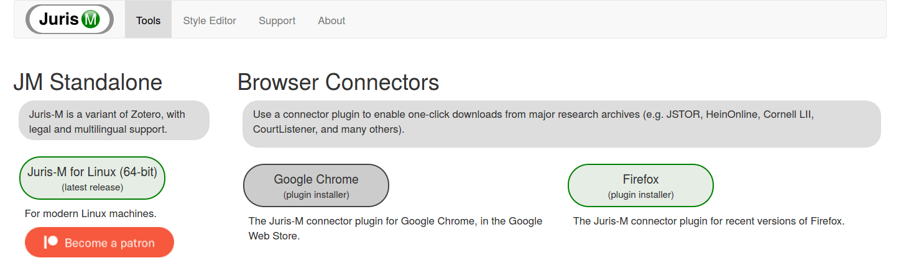

Website Housecleaning
Website Housecleaning
Frank Bennett (June 29, 2020)
Frank Bennett (June 29, 2020)
Today marks the debut of a fresh version of the Jurism project site, which aims to be lighter, simpler, and generally more modern-looking than its predecessor. The previous version rolled out five years ago, and as the first shot at a portal drafted in a busy season, not much attention went into its appearance. The new site leverages professional work done for a more complex faculty site that has since been decomissioned. I was fond of the design, and I hope that the remix here will be received as an improvement.

Publication of the new site design is accompanied by release of a new beta version of the Jurism client that includes a much-improved IndigoBook style. The new style is a major step forward in legal referencing support for lawyers, academics, and journalists. There are several interesting layers to the Jurism approach to legal reference management, and I will be posting further notes on the details to this space in due course.
Note that the new site abandons a validating editor for legal style modules that provided impressive but less flexible support for style authoring than the citeproc-test-runner that became available last year. The editor contained an integrated manual on drafting legal style modules, which will be updated and added here as time permits.
Frank Bennett, at Nisshin, Aichi-ken, Japan, 29 June 2020